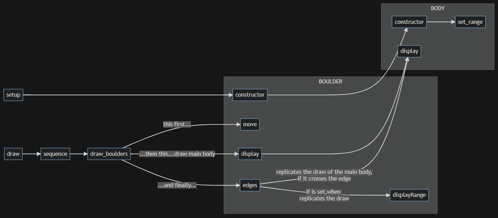
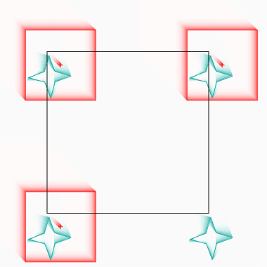
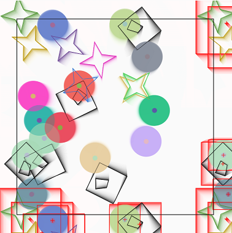
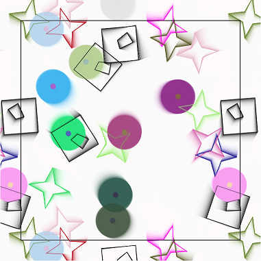
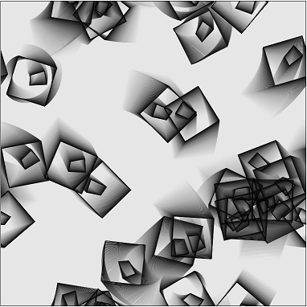

MODULAR
Modular: Rotations in a modular space
This program produces a drawing in which the objects, when they cross over
the edge, are also drawn on the opposite side.
If they cross a corner of the edge, they must be drawn four times.
If they cross one side of the edge, they must be drawn twice.
This "modular" way of drawing objects is the one used for static drawings in the "regular tessellations" of the floors or for the animations of famous games such as "Asteroid".
In the event that the objects rotate, the maximum encumbrance of the rotation must be considered, otherwise the position of each vertex of the object would have to be calculated each time.




